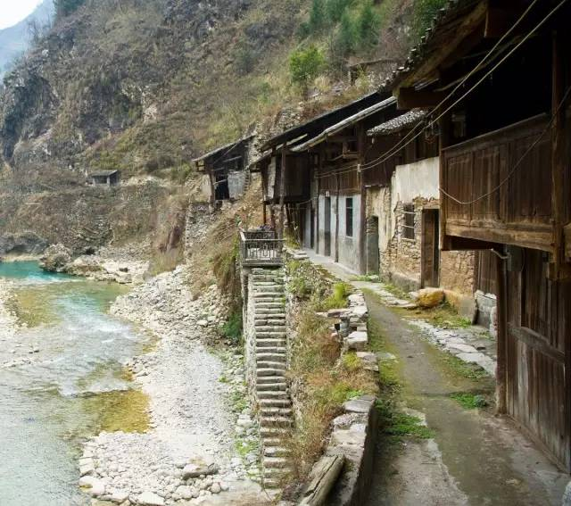
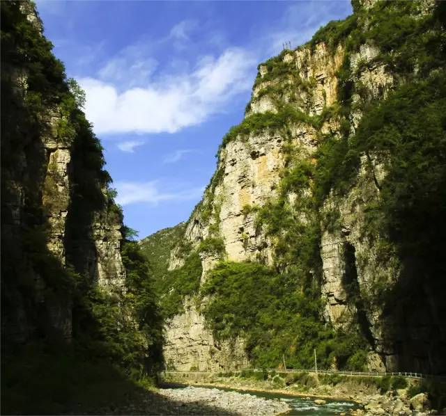
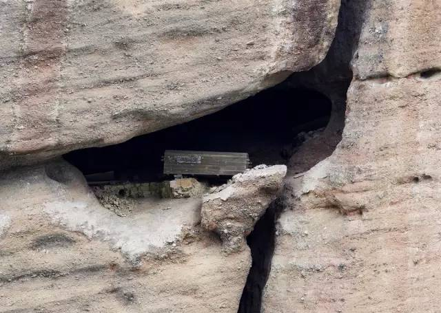
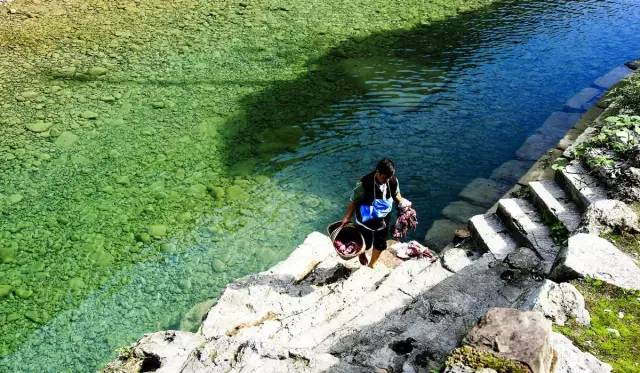

旅游文化 | 宁厂古镇：峡谷深处的千年“聚宝盆”
 347
347
前不久，央视大型专题节目《远方的家——北纬30度中国行》第85集，讲述了原川东巫溪县“大宁盐场”的千年沧桑故事，让人震惊……
在中国古代，雪白的盐是如何书写着一个地方血与火历史的？盐给那里的人们带来何等沧桑的折腾？国内最长的输卤栈道又是如何在2000年前的危崖上凿造出来的？……
这些，都可以在巫溪县宁厂古镇找到令人心颤的答案。
巫溪县地处长江三峡腹地，今属重庆，是个藏卧在深山峡谷里的千年老镇。镇上房屋多系临河而修的吊脚楼。夕阳下，这些多已歪斜的吊脚楼支撑的远不只是水边的老屋，而是一部承载历代镇民和过客艰难生存的历史。

临河多是吊脚楼
群山环抱的古镇，有一座兴起于秦汉的大宁盐场遗址。历史上，这座盐场所产食盐远销秦楚、川陕和云贵等地，明清时更是荣耀而成皇家贡品。如今，大宁盐场虽已废弃，但空气中依稀散发着淡淡的咸湿味儿，在莽莽苍苍的峡谷里让人嗅出它古老的气息。
大宁盐场遗址
盐泉流淌 千年盐场早成废墟
你可以说历史是个任人打扮的小姑娘，但在品读峡谷深处的宁厂古镇时，你面对的是一位着装整肃、神情严峻的老人，容不得任何轻慢的染指。
古镇依山傍水而建，青石街道逼仄，吊脚楼、过街楼等古建筑和民居沿后溪河蜿蜒延伸达3.5公里，俗称“七里半边街”。那天早上，漫步在宁厂镇，厚厚的云层开始变薄，一缕阳光从云遮雾绕的山巅探出头来，经过两天大雨冲洗的大宁河谷，弥漫着潮湿而清新的空气。但河水，早已没有我多年前见过的那种激流滔滔，更与行舟无缘。

半边街
走进张家涧龙君庙遗址，只见一面小瀑布下有一方小池，池中之水呈褐色，上面泛着白色泡沫。在龙头吐珠石壁上，刻有“宝源天产”四个字。盐池下方，有个残损的龙头。当地人说，在龙头没有破坏以前，这个龙头的龙嘴的两边，一边流的是咸水，一边流的是淡水。
这股盐泉从山体里流淌了几千年
被开掘使用了2000多年的这股盐泉依然丰沛，日夜流淌，但曾经名动天下的大宁盐场，却早已成废墟。除了几个退休的盐场老人经常来走走看看，平时十分冷清。
走进昔日的制盐车间，只见墙壁颓废，柱头孤立，房梁歪斜。地上，制盐锅灶仍在，但锈迹斑斑，杂草丛生。许多曾用于熬盐的灶、锅、大木桶都随处可见。在出盐口，仍有一片白色盖住红砖，我用手一摸，发现这是当年制好的盐粒粘在砖上，经历岁月磨砺，已然钙化。
1996年，国家明令禁止传统的“平锅制盐”继续生产，在亏损的深渊里挣扎多年的大宁盐厂顺理成章地停产了。现在居住在镇上的不过300来人，很多时候他们都坐在河边打牌聊天，打发日子。
守望着日晒雨淋中艰难挺立的老房子，一个个老人面朝大山悄无声息地走了，他们草芥般的生命如同风中的一片落叶。
面对笔者的相机镜头，镇上姑娘有点害羞
那天在镇上，我遇到两名正专心制作十字绣的女孩。面对我的相机镜头，她们开始有些不好意思，捂着脸说“照啥哦！我们又不像城里女孩长得那么好看……后来，那位漂亮点的女孩笑着承认，她手头这张十字绣，是给自己在深圳打工的男朋友绣的，她准备明年跟他到南方去找点事做。“我想嫁给他，只是目前手头有点紧。”她红着脸说。
是的，大山之外，始终有一道声音在呼唤着镇上的年轻人：该出去看看了，家乡，早已养活不了自己。
逐鹿得泉 河上漂来神奇传说
说到远近闻名的宁厂盐泉，总绕不开“逐鹿得泉”的神奇传说。
《舆地纪胜》讲了这样一个故事：先秦时，猎人袁氏带猎狗在高岭大峡里追一只梅花鹿，追了几天几夜，梅花鹿走走停停，诱得猎人一路追下去，来到苍翠的宝源山下，猎人饥渴难忍，他忽然听到有潺潺的流水声，一看是一注褐色的泉水。他捧起一喝，竟是咸咸的盐水。再抬头看鹿，已不见踪影。猎人方知，是神鹿指引他来寻这股盐泉的。他用竹筒带回泉水，回家熬出一捧雪白的食盐。
《山海经》记载，巫咸国人秦时发现宝源山盐泉后，煮泉得盐，借大宁河舟楫之利，因盐而兴，开辟了一方“不耕而食，不织而衣”的乐土，创造了“一泉流白玉，万里走黄金”的辉煌。
河边古栈道
从古到今，盐业都被封建王朝视为经济命脉，十分看重。明朝时，朝廷任命二品大员管理大宁盐厂，这可以看出当时大宁盐厂在明王朝的地位有多高。旧版《大宁县志》说，宁厂镇的制盐业，在清康熙四年(1665年)至乾隆三十一年(1766年)这100多年达到鼎盛，盐灶增至336座、盐锅有1008口，产量也达到历史最高水平，号称“万灶盐烟”。那个时期，宁厂食盐因出产于深山峡谷、纯度高、盐味温和而成为全国的盐业重镇，盐品还远销秦楚、川陕、云贵等地。当时，全国各地盐商纷纷来这里订购食盐。
大宁盐厂在当时的交通是四通八达的。陆路有通往陕西西安乃至全国的古骡马大道，水路有木船上行东溪河和西溪河，下行巫山城入长江。
从至今遗留在县内万古、长桂、中梁、天元等地的古骡马大道遗迹上，我们有理由还原这样一幅热闹繁盛的“溪山行旅图”：崇山峻岭中，哒哒的马蹄声和货船的号子声，回响在河谷里，日复一日装饰着人们的美梦。镇上，从蒸气氤氲的作坊到人头攒动的商号，大包小袋盐包扛进扛出，成箱成捆银币流进流出。一到晚上，灯火通明，酒馆林立，南腔北调的社戏在会馆竞相登场。官绅大户搂着艺妓的细腰儿躺着在茶肆的软包里，他们枕着涛声，望着天上的圆月不知今夕何夕……而在民国时期和上世纪五六十年代，盐场依旧在溪口码头和街上出现“日有千人拱手，夜有万盏明灯”的景象。七里长街，八面来风，一个深山小镇以它的低调内敛吸引着世人的目光。

大宁河峡谷
“大宁盐场上世纪50年代是最繁华的。”镇上的退休工人陈世义告诉我，“当时镇上有100多家灶房，大部分是煤灶，少部分是柴灶。为盐厂服务的船工、搬运工就有1000多人。川东地区最早的银号也开在我们宁厂。”
上世纪40年代初，大宁盐场为支持国人抗战，扩大了产盐规模，这可能引起日本人的警觉，“1942年夏，日军飞机轰炸大宁盐场，当时飞来5架轰炸机，一气投下20多颗炸弹。当时几个光屁股娃娃正在河里洗澡，有一颗炸弹嗖嗖落下，掉在衡家涧我老屋附近的大芝麻缸里，幸好没爆炸。”巫溪县林业工程师任能国回忆说。
今天在镇上，我还隐约看到湖北、江西、广东等地商人留下的会馆遗址。它们遍布蛛网，蓬蒿丛生，如一个憔悴而被人遗忘的弃妇。
东汉先民 耗时50年修建栈道
今天的大宁河西侧，距河面三四米高的岩壁上，连贯排列着一个个饭碗大的方形石孔。这些方形石孔音符般连缀成串，由巫山县龙门峡溯河而上，延伸到巫溪县宁厂镇的后溪河，全长约270多里。央视《远方的家》说，这是国内迄今发现的最长的输卤栈道。
岩壁上的方形石孔就是东汉输卤栈道遗址
大宁盐场自先秦发现盐泉后，无疑捡了个“聚宝盆”。东汉初，官署大举开发大宁食盐，为了把巫溪宁厂镇的盐卤水引导到下游的巫山县大昌镇大规模熬制，先后征用了数万名民工在大宁河岩壁上凿建栈道，再上置竹笕，输送盐卤。这项工程耗时50多年，到东汉永平七年（公元64年）才完成，其规模之浩大、施工之艰难，使用之长久，堪称世界奇迹。
我无法想象，2000多年前，高岭大峡里的巫咸古国先民，是如何用麻绳把自己拴在悬崖上进行施工的。绝壁上，他们抡起钢钎凿子，一锤一锤打眼凿孔。他们头顶蓝天，下临激滩，身上暴凸的肌腱被烈日晒得青铜般黑亮。他们汗如雨下，每滴汗珠落到烈日下的岩石间就被“咝咝”烤干。河滩上，女眷们用石头垒砌火灶，钻木取火为男人们做饭烧水。孩子们长大后，无声地接过父辈留下的钢钎铁凿继续攀岩修道。此起彼伏的叮咚凿孔声，惊飞了盘旋在山顶的鹰隼。一代代先民们就这样不畏艰辛，凭血肉之躯铺架一条血管式的引卤通道。

岩间悬棺
我后来在镇上不远处的荆竹峡看到，绝壁上，至今保存着十多具褐色的古悬棺。借助长焦镜头，我清晰地看到那些“躺”在危崖间几乎没有风化变质的棺木是何等地坚固，何等地隐忍。多年前，县文物单位在四川大学历史系几位专家的帮助下，发掘揭开过几具，里面大多是秦汉时开盐先民的遗骸和制盐器具。
“当年我们从危崖上抬取那几具悬棺，真是步步惊心。绝壁上，先民到底是如何把这些悬棺放上去的，无法想象呀。”陪同我采访的重庆档案专家吴健先生说。
无尽沧桑 血火中的古战场
千百年来，藏卧于长江三峡腹地中的大宁盐场“聚宝盆”，经常成为浸透血与火的古战场，蒙上一层深深的悲情色彩。
明正德元年（1506年），大宁灶夫鄢本恕、廖惠，因不满盐官的勒索盐税，率千余人起义，后转战川陕，一度拥兵10万，声势浩大，5年后虽悉数被血腥镇压，血染绿溪，但这次起义迫使衙署重新制定了对灶夫的征税政策并在全川推广。鄢本恕成立的大宁场盐业公会，据重庆已故文史专家汤绪泽先生考证，这应该是世界上最早出现的盐业工会。
明崇祯十七年（1644年）秋，清兵入关，李自成兵败北京。两年后，其部将贺珍、贺道宁父子率残部从汉中转战大宁县，他们踞山为营，一度控制了这里的盐灶，雇人制盐，得以自存。清康熙三年（1665年）初，清廷调动5万大军，围贺道宁于宁厂镇。八月，贺寡不敌众，他把从贩盐获得的金银财宝分与众将士，令其分散突围逃命，自携家眷仆役抱团自焚，十分悲壮。
巍峨的剪刀峰
差不多也是在李自成政权覆灭的同时，张献忠手下有一只两千多人的女营也辗转来到三峡腹地的宁厂镇，她们在巍峨山岩上修建了一座坚固险要的“女儿寨”，同时派人经营山下的大宁盐场。鼎盛时，这群女兵一度拥有40多条盐船，贩盐到陕西的安康、湖北的竹溪等地。
一天清晨，山下传来一阵急促的马蹄声，英武俊俏的女首领出寨查看，浓雾中她以为是清军来袭，引弓取箭，嗖的一箭朝对方的首将射去。她万万没想到，自己射死的竟是久别的丈夫。原来，这只残军是从湖北辗转入川找她们的。女首领误杀亲夫，悲痛万分，拔刀自刎。
两年后，清军再次来袭，几番攻城，死伤累累，山崖、草丛、洞穴间到处塞满阵亡他们的遗骸。后来，清军使出威猛的冲天炮和最骁勇的健锐营，好不容易拿下女儿寨，出于报复，他们残忍地杀害了全部义军，把她们的尸体成排悬吊在溪口一带的岩壁上，七八公里长的河段骤成刑场，青绿河水一片赤红，天愁地暗，山鹰为之盘旋哀嚎。很多船工说，他们经常夜行至此，当蒿杆与水中的石头发出摩擦，似乎总在黑魆魆的山岩间听到那些女人的亡灵还在刚烈搏杀，还在嘶叫挣扎，她们身上的血腥味被峡风将吹得刺鼻而瘆人……

河边人家
流连大宁盐场那两天，我的心情很不平静。那天黄昏，拖着斜阳下长长的阴影，我默默在草丛中寻找那些熬过盐的残锅铁灶。我还想嗅辨出源自山体的咸湿味和先民的汗渍味是如何交织在一起的。秋叶凋零，脚下的西溪河日复一日低吟流淌，像是为这个千年盐场唱着一首送终的挽歌。危崖上的古城堡，也披着酒红色余晖渐渐淹没在夜幕中，仿佛一个解甲归田的老年武士，带着浑身伤痕隐姓埋名，了此残生。
【作者简介】
李贵平，毕业于重庆师范大学中文系，现为成都市锦江区作家协会副主席，四川省散文学会常务理事。《北京晚报》《羊城晚报》《莫愁》等全国八家主流媒体专栏作者。先后在《中国青年》《中国文化报》《光明日报》《解放日报》《旅游》《西南军事文学》》等发表900多篇军事述评、散文、游记。多项作品获四川省报纸副刊作品一等奖。出版报告文学集《开拓者风采》。现供职于成都华西都市报社。
来源：中国国家旅游杂志